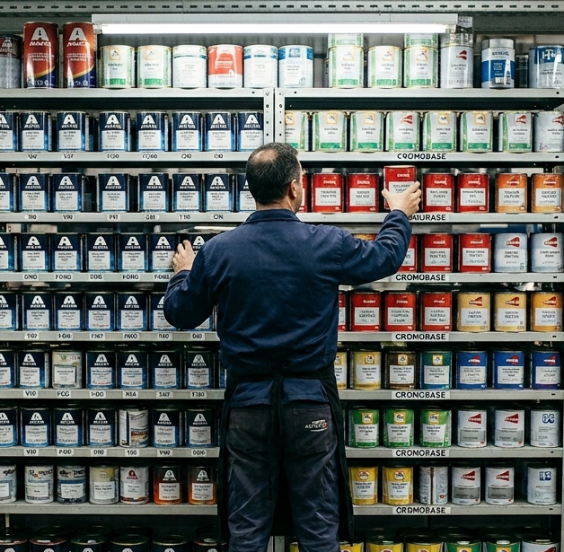
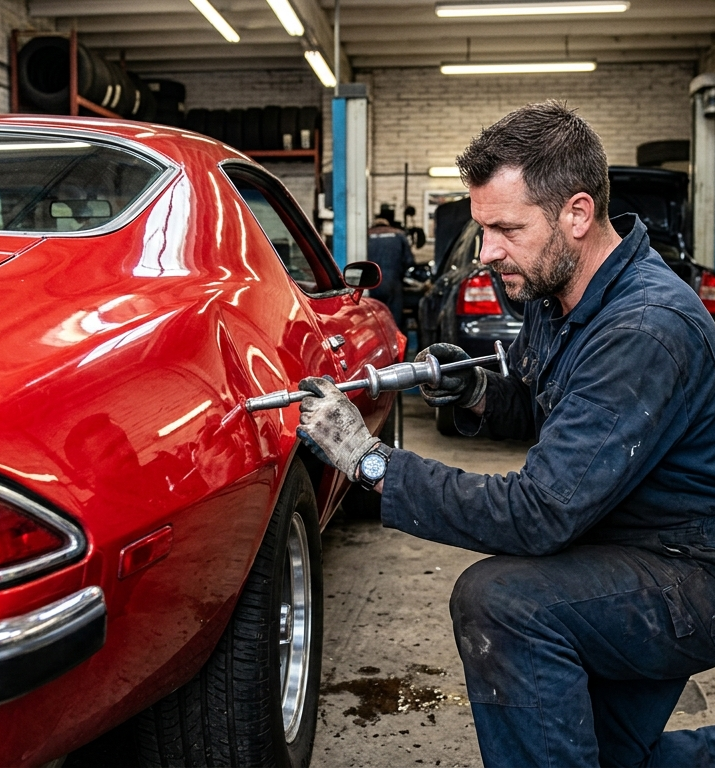
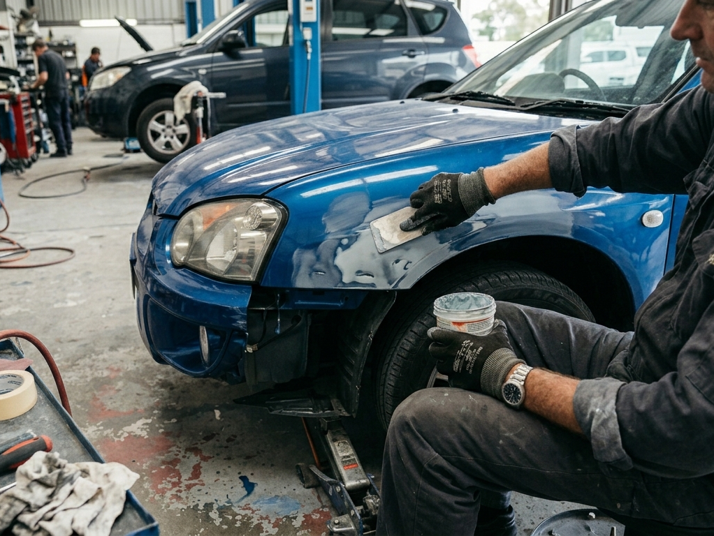
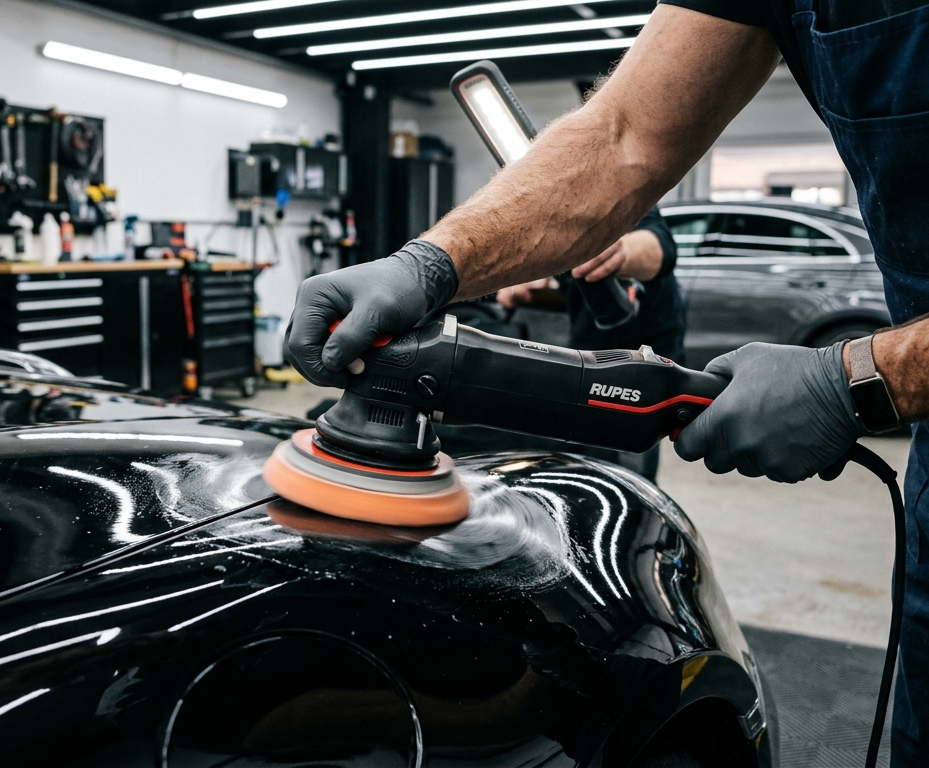
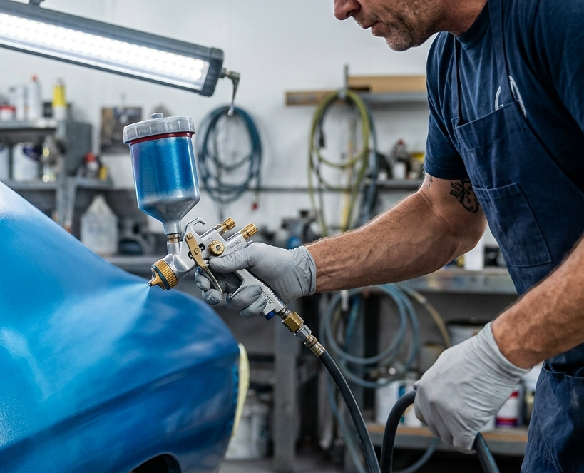
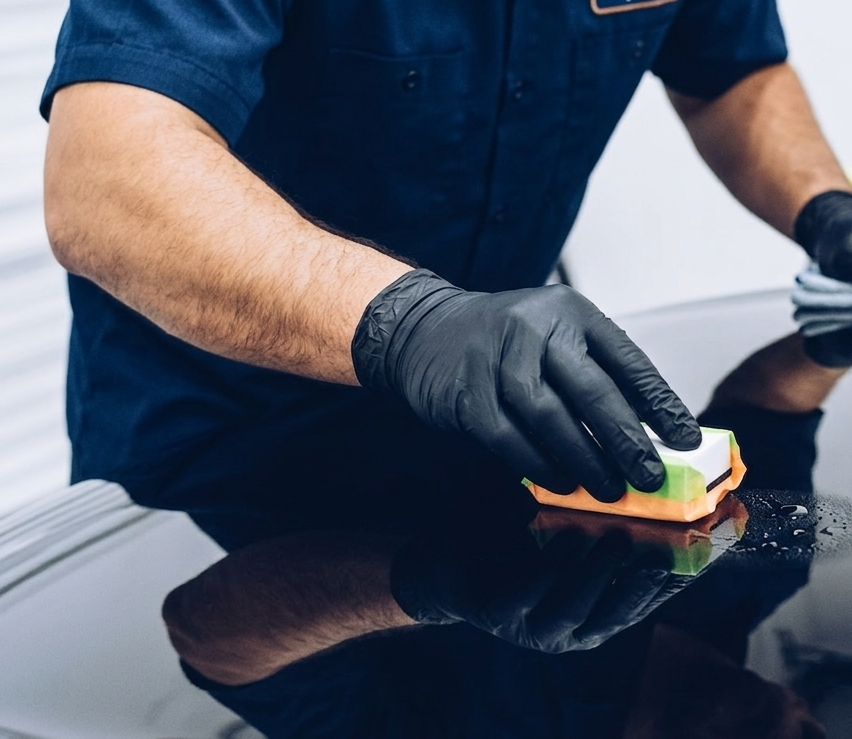
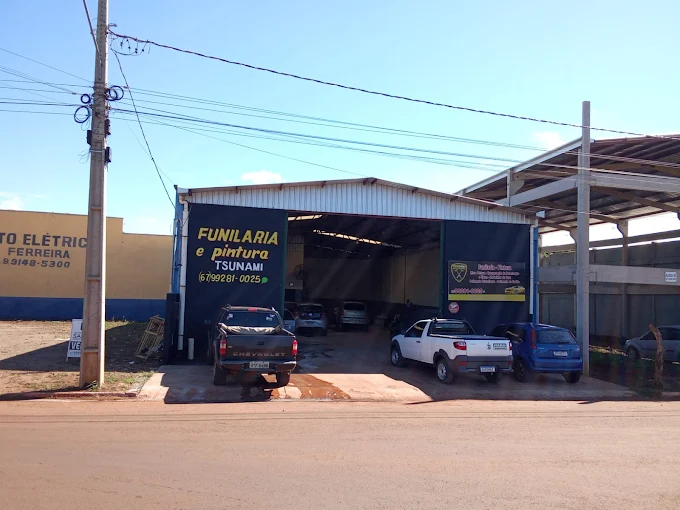

Pintura automotiva
Produzimos a tinta e pintamos as peças danificadas com precisão.

Produzimos a tinta e pintamos as peças danificadas com precisão.

Desamassamos a lataria sem necessidade de pintura, preservando o valor.

Recuperação estrutural e de chaparia para qualquer tipo de avaria.

Tratamento de brilho intenso e remoção de riscos superficiais.

Agilidade máxima: seu carro pronto no mesmo dia com qualidade Ristec.

Proteção cerâmica de alta resistência contra agentes externos.
é especializada em cuidados completos para funilaria e pintura automotiva, oferecendo serviços de funilaria, martelinho de ouro e pintura automotiva com precisão e acabamento profissional.
Trabalhamos com recuperação de amassados, polimento de faróis, microrretoque, micropintura, recuperação de para-choque e reparos que devolvem ao veículo sua aparência original, preservando o valor e garantindo um resultado de alta qualidade.
Com experiência, técnica e compromisso, atendemos motoristas de Sidrolândia e região que buscam um serviço confiável, detalhado e feito com capricho. Aqui, cada veículo é tratado com cuidado e atenção individual — do pequeno amassado ao reparo completo.
